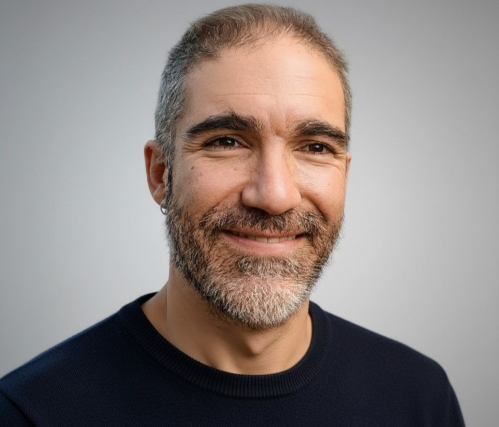

Máster en AI Engineering
Aplicaciones con LLM, RAG y CAG, agentes y sistemas agénticos, y evaluación de soluciones de IA.

Busco roles de Engineering Manager y liderazgo técnicoLidero, gestiono y escalo equipos técnicos, mejoro la entrega de software e incorporo la IA generativa al desarrollo. Más de 15 años en el sector, del desarrollo web a dirigir un departamento de ingeniería.
Las áreas donde más aporto y de las que puedes preguntarme en la entrevista.
Construyo y hago crecer equipos de ingeniería: selección, onboarding, mentoría y evaluación por objetivos, con autonomía y buena cultura de ingeniería.
Prácticas ágiles (Scrum, XP, Kanban), estándares de calidad, revisión automática del código, CI/CD y métricas para entregar más valor con menos incidencias.
Llevo la IA generativa al trabajo diario de los equipos con un uso práctico, seguro y responsable, y construyo aplicaciones con LLM, RAG y agentes.
Responsabilidad sobre resultados económicos, cartera de proyectos, preventas y relación con clientes y dirección.
La IA generativa está cambiando cómo desarrollamos software. La he llevado a equipos reales y la estudio y la uso a fondo.
Impulsé, junto con otros responsables, la adopción de IA generativa en los equipos de desarrollo del área, con un flujo de trabajo y un harness asistidos por IA en proyectos reales. Pequeñas funcionalidades y correcciones que podían llevar unos dos días se entregaban de forma autónoma en menos tiempo y con criterios de calidad más objetivos: alrededor de un 30 % más de valor entregado (estimación propia).
Aplicaciones con LLM, RAG y CAG, agentes y sistemas agénticos, y evaluación de soluciones de IA.
Una aplicación de tareas y productividad con servidor MCP, para que los agentes de IA trabajen con ella. Lo desarrollo con agentes de IA y un flujo de backlog en GitHub.
todo.reflexionia.comUna entrevista con una IA que responde solo con información que he revisado y citando la fuente. Es mi caso práctico de RAG, guardrails y control de coste.
Ver la entrevistaDel desarrollo web a dirigir un departamento de ingeniería.
Dirección del departamento: personas, cartera de proyectos y resultados.
Liderazgo técnico y construcción del equipo desde cero.
La plataforma de contenidos de los portales internacionales de la universidad.
Una plataforma SaaS de marketing online para farmacias.
Webs y aplicaciones para marketing online y captación de clientes.
Algunos proyectos que explican cómo trabajo.
Intranet web y móvil para una cadena nacional de supermercados. Dirigí el proyecto de principio a fin, coordiné los equipos y definí las API REST y los requisitos de seguridad con el IT del cliente.
El producto interno de UNIR sobre el que funcionaban sus portales en seis países. Lo construimos desde cero; con el equipo creciendo de 4 a 10 personas, CI/CD y contenedores acortaron las entregas alrededor de un 40 %.
Plataforma que generaba y gestionaba las webs de las farmacias, con tienda online, catálogo común, panel, API y campañas de email.
Construcción y desarrollo de equipos, selección y mentoría, gestión del desempeño por objetivos, cultura de ingeniería, metodologías ágiles y responsabilidad sobre la entrega de software.
Gestión de un departamento de ingeniería y de su cartera de proyectos: planificación de capacidad y recursos, organización de equipos, seguimiento económico y de rentabilidad, preventa y relación con dirección y clientes.
PHP (a medida y WordPress), Drupal, Laravel y Symfony; API, bases de datos SQL y NoSQL, seguridad web, rendimiento e integración de sistemas. Proyectos personales recientes con TypeScript, Python y FastAPI. Con la IA volvemos a las bases: los fundamentos nunca fueron tan importantes como ahora.
AI Engineering · Generative AI · LLM Applications · Retrieval-Augmented Generation (RAG) · Cache-Augmented Generation (CAG) · AI Agents & Agentic Systems · AI-assisted Software Development · Prompt Engineering · AI Evaluation · AI Adoption & Governance. La IA multiplica lo que ya sabes hacer: sin buena ingeniería detrás, solo acelera los errores.
Procesos de entrega ágiles y predecibles, con integración y despliegue continuos, estándares de ingeniería y calidad integrada en el ciclo de desarrollo.
Traducir objetivos de negocio en planes técnicos, alinear a áreas como marketing, contenidos, sistemas o legal, reportar tanto a dirección como a los equipos y presentar soluciones a clientes y en eventos del sector.
Ingeniería aplicada para construir productos con LLM: CAG, RAG, orquestación de agentes y evaluación de soluciones de IA. Lo pongo en práctica en mis propios proyectos, como esta web con entrevista por IA y tick-tack-done con su servidor MCP.
Ver certificado (PDF)Lo hice siendo Team Lead en VASS, para dar método a la gestión de personas. Trata de mentoring, one-to-ones, contratación y onboarding, equipos de alto rendimiento y resolución de conflictos.
Ver certificado (PDF)Lo cursé en la propia UNIR mientras el equipo de la plataforma de contenidos crecía de 4 a 10 personas y adoptábamos CI/CD y Docker con GitLab. Cubre cultura DevOps, cloud (AWS), infraestructura como código, ciclo de vida de las aplicaciones, CI/CD, Docker, Puppet y Chef, con un proyecto final.
Ver título (PDF)Mi base técnica en ingeniería del software. Al terminarla empecé como desarrollador web en Logiqo, mi primera experiencia profesional.
ago 2018 – abr 2019. En La Nave, con 600 asistentes, fue el WordCamp más grande de España hasta entonces; las entradas se agotaron tres semanas antes. El Contributor Day se celebró en Google for Startups.
Charlas en WordPress.tv
Empecé programando web y, con los años, aprendí que los buenos proyectos salen de buenos equipos.
He pasado de diseñar y construir software a formar y liderar equipos de desarrollo, sin perder el interés por entender cómo funcionan las cosas y cómo mejorarlas. Me gusta estar cerca de la tecnología, conectar lo que el negocio necesita con lo que realmente podemos construir y crear entornos donde las personas tengan autonomía, crezcan y hagan buen software.
Hoy me interesa especialmente cómo la IA está cambiando nuestra forma de desarrollar, aprender y trabajar. Busco una nueva etapa donde seguir combinando ingeniería y liderazgo.
Soy padre de mellizos. Me encontrarás en la montaña, en un campo de rugby o de viaje.
Estoy construyendo una entrevista con una IA que responderá sobre mi trayectoria solo con información que he revisado, citando de dónde sale cada respuesta. Ya puedes probar la interfaz.
Si encajo con lo que buscas, hablemos. LinkedIn es la forma más rápida de contactar conmigo.
Busco roles de Engineering Manager y liderazgo técnico, en remoto desde España o en híbrido en Madrid.